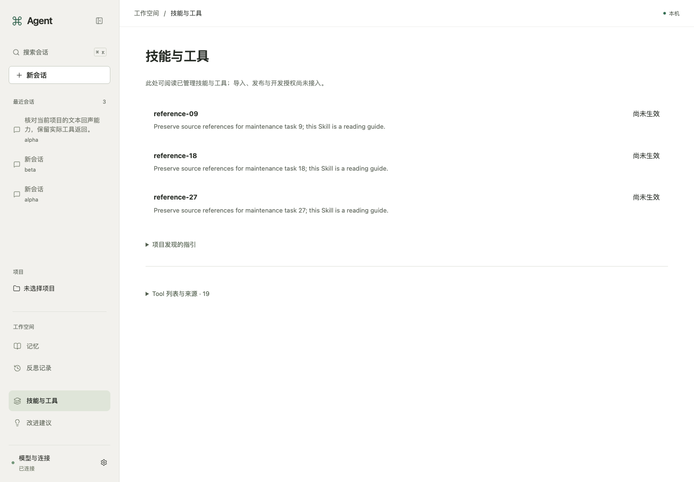
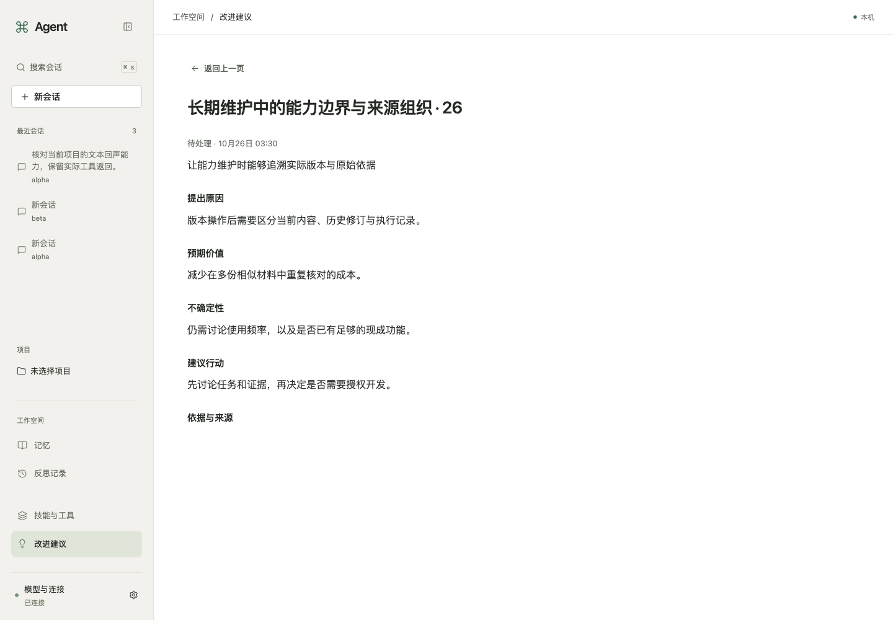
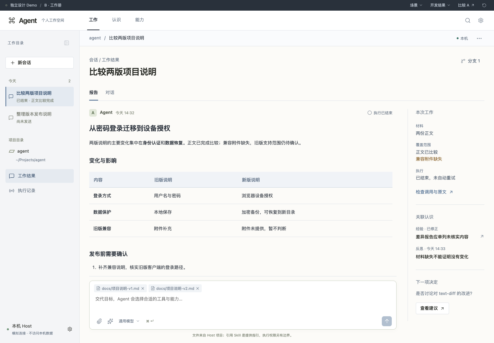
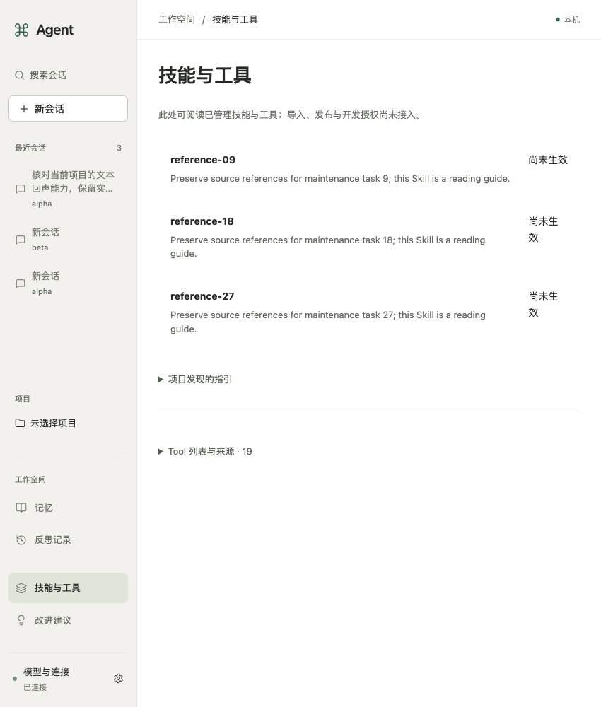
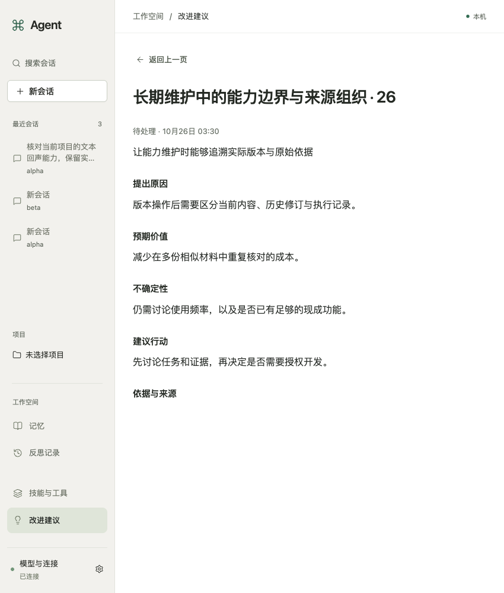
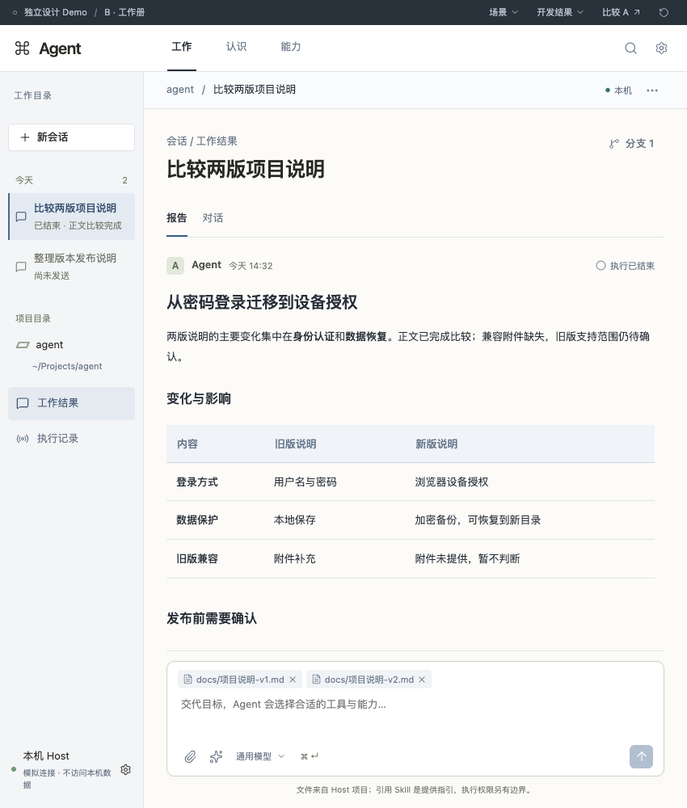

D6-A · Skill / Tool 与 Evolution / Activity
运行入口、接口边界与限制 · 隔离正式 Host 4193 · 真实模型 Host 4189。两个 Host 提供同一现有 D6-A，私有认证通过 README 的 open 命令传入。
本页为开发与独立验收证据，不是产品界面或视觉批准基线。非空 Skill 开发由受控 Provider 驱动正式 Pi Tool、授权、检查与发布；未宣称真实模型自主开发成功。
连续用户任务
建议 → 采纳 → 独立讨论 → 明确授权 → 正式检查与发布 → 精确 Skill 版本 → 返回建议；同一对象连续点击，保留讨论草稿。受控 Provider。编辑候选 → Diff → 精确 Review → Publish → applied → Knowledge → 建议分页与讨论。部分发布后失败：已生效成果和失败候选分别保留，进入精确版本。真实模型既有 Reflection 结论 → 来源 → 返回原会话；无新增变化。正式 Host Reflection 权威分页 → 后台 Memory 成果 → 精确修订与来源。受控机制。
实际断言与脱敏请求
正式 Host 机制逐项结果 · 机制请求 · 正式既有测试29项 · 工程检查 16/16 · 范围与此前六文件 · 机械设计检查 · 凭据扫描
Trace：完整建议开发链 · 手机编辑发布 · Skill冲突/失败/401/403 · Memory断线恢复 · 手机Reflection成果。早期失败与驱动修正保留在 attempt1，未混入最终通过结果。Reflection 回归曾一次失败，隔离副本复跑通过，根因尚未定位。
三尺寸主要与二三级页面
现有 D6-A · 整合前后
相同窗口与字体环境；中间发生真实操作，版本与状态有变化。这是功能与层级对照，不是相同内容的视觉基线。
整合前只读 Skill
当前可编辑与审核 Skill整合前建议
当前独立讨论原模拟 A：前后 PNG 字节一致 原模拟 B：前后 PNG 字节一致
原模拟 B：前后 PNG 字节一致
现有 D6-A · 整合前后
相同窗口与字体环境；中间发生真实操作，版本与状态有变化。这是功能与层级对照，不是相同内容的视觉基线。
整合前只读 Skill
当前可编辑与审核 Skill整合前建议
当前独立讨论原模拟 A：前后 PNG 字节一致 原模拟 B：前后 PNG 字节一致
原模拟 B：前后 PNG 字节一致
现有 D6-A · 整合前后
相同窗口与字体环境；中间发生真实操作，版本与状态有变化。这是功能与层级对照，不是相同内容的视觉基线。
整合前只读 Skill当前可编辑与审核 Skill整合前建议当前独立讨论原模拟 A：前后 PNG 字节一致 原模拟 B：前后 PNG 字节一致
原模拟 B：前后 PNG 字节一致
验收边界
真实模型自主开发、远程包获取、复杂原生构建、操作系统沙箱、真实读屏器和实体设备均未完成验证。Skill/Activity 没有 Host 分页接口；历史被删除文件缺少枚举入口。草稿为页面进程内保存。授权 Shell 使用本机用户权限。详见 README，不能把这些边界计作已完成能力。
正式 Host/Web/Desktop、B 和历史源码未修改。既有测试意外重写三个历史证据 JSON，范围偏差仍未恢复；没有提交、推送或批准视觉基线。等待 ChatGPT 独立验收。